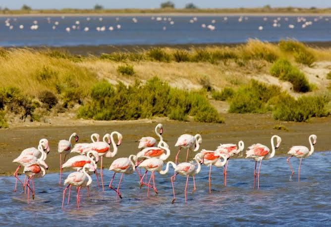

Flamants roses
Camargue gardoiseL’oiseau emblème des étangs


⟹ Sites Emblématiques ⟸
Un grand voyageur installé dans les lagunes. Le flamant rose (Phoenicopterus roseus) appartient à une lignée d’oiseaux très ancienne, spécialisée dans les eaux peu profondes. Contrairement à l’image d’un animal attaché à un seul étang, il parcourt un vaste réseau de zones humides, de la péninsule Ibérique à l’Italie et à l’Afrique du Nord. Les oiseaux que l’on observe près d’Aigues-Mortes peuvent donc avoir fréquenté, au cours de leur vie, plusieurs pays du bassin méditerranéen. La Camargue constitue pour eux à la fois un lieu de reproduction, de nourrissage et de repos.
Comment le delta du Rhône a façonné son habitat. Pendant des millénaires, le Rhône a déplacé ses bras, accumulé des sédiments et créé une mosaïque de lagunes, d’étangs saumâtres, de sansouïres et de marais. Les flamants exploitent précisément cette diversité : leur long cou et leur bec recourbé leur permettent de filtrer la vase et l’eau à la recherche de petits invertébrés. Les niveaux d’eau et la salinité déterminent les zones où ils trouvent de la nourriture. Les aménagements humains, notamment les salins, ont ensuite modifié ces équilibres tout en créant certains habitats favorables.
Une colonie qui dépend de la tranquillité des îlots. La Camargue abrite le principal site de reproduction régulier de l’espèce en France. Pour nicher, les flamants recherchent des îlots isolés des prédateurs terrestres et des dérangements. Les couples édifient de petits monticules de boue sur lesquels la femelle pond généralement un œuf. Les deux parents participent à l’incubation et nourrissent le poussin grâce à une sécrétion produite dans leur appareil digestif. Les jeunes se regroupent ensuite en véritables crèches, surveillées par des adultes. Une modification brutale du niveau de l’eau ou des passages trop proches peuvent compromettre une saison entière.

Une couleur qui raconte leur alimentation. Les poussins naissent couverts d’un duvet gris ou blanchâtre : ils ne deviennent pas immédiatement roses. La teinte caractéristique apparaît progressivement grâce aux caroténoïdes contenus dans les petits organismes qu’ils consomment, notamment les artémies des eaux salées. Le flamant filtre la nourriture grâce aux lamelles de son bec, souvent la tête renversée sous l’eau. Sa silhouette spectaculaire est donc le résultat d’adaptations très concrètes à un milieu exigeant, et non d’une simple particularité décorative.
Des décennies difficiles au XXe siècle. La reproduction camarguaise a longtemps été fragile. La collecte d’œufs, les tirs, les dérangements et les transformations des zones humides ont pesé sur les colonies. Certaines saisons se sont soldées par de très faibles résultats. Cette histoire rappelle qu’une grande concentration d’oiseaux n’est pas nécessairement le signe d’une population à l’abri : lorsqu’une espèce dépend de quelques sites de nidification, un incident local peut avoir des conséquences à grande échelle.
La Tour du Valat et le suivi scientifique. Fondée en 1954 par Luc Hoffmann, la Tour du Valat a joué un rôle majeur dans l’étude et la protection des zones humides méditerranéennes. La création et l’entretien d’îlots adaptés ont favorisé la reproduction. Depuis 1977, le baguage de flamants avec des bagues lisibles à distance permet de reconstituer leurs déplacements, leur fidélité aux sites et parfois plusieurs décennies de vie. Chaque observation d’un oiseau bagué contribue à une connaissance collective de la population méditerranéenne.
Aigues-Mortes : un paysage partagé entre sel et vie sauvage. Dans la Camargue gardoise, les salins d’Aigues-Mortes offrent un spectacle particulièrement saisissant : des bassins aux couleurs changeantes accueillent des groupes de flamants en quête de nourriture. Il faut toutefois distinguer les bassins où ils s’alimentent des îlots où se concentre la reproduction camarguaise. La saliculture et la biodiversité peuvent coexister, mais cet équilibre suppose une gestion attentive des niveaux d’eau, de la fréquentation et des habitats.
Un symbole vivant, et non un décor. Le flamant rose est devenu une figure familière de la Camargue, présente sur les photographies, les affiches et les souvenirs. Derrière cette image se cache un oiseau sensible aux sécheresses, aux épisodes météorologiques extrêmes et aux changements de gestion des lagunes. L’observer à distance, sans chercher à approcher les groupes ni les jeunes, permet de préserver ce qui fait justement la beauté du spectacle : des oiseaux sauvages libres de se déplacer entre les étangs.
Une vie rythmée par les saisons. La présence des flamants dans les étangs n’est pas identique toute l’année. Certains individus restent dans le Midi en hiver, tandis que d’autres gagnent des zones humides plus méridionales ou circulent entre les rives de la Méditerranée. Au printemps, les adultes reproducteurs peuvent parcourir de longues distances entre les lieux de nourrissage et la colonie. Le visiteur qui voit des centaines d’oiseaux sur un bassin n’assiste donc qu’à un instant d’une histoire beaucoup plus vaste, faite de déplacements, de fidélité à certains sites et d’occasions saisies lorsque les conditions deviennent favorables.
Le rôle décisif de l’eau et du sel. Un étang trop profond empêche les flamants d’atteindre leur nourriture ; un bassin asséché ne leur offre plus les mêmes ressources. À l’inverse, une salinité adaptée peut favoriser certains petits crustacés dont ils se nourrissent. La gestion des niveaux d’eau est donc un véritable travail d’équilibriste. Dans les paysages aménagés des salins, la circulation de l’eau répond d’abord à une activité humaine, mais elle influence aussi la répartition des oiseaux. Cette interdépendance explique pourquoi la conservation ne se résume pas à interdire l’accès à un site : elle suppose de comprendre son fonctionnement hydraulique.
Grandir au sein d’une colonie. Après l’éclosion, le jeune flamant dépend de ses parents pendant plusieurs semaines. Ceux-ci le reconnaissent notamment grâce à ses vocalisations au milieu d’une colonie très bruyante. Les jeunes rassemblés en crèche ne sont pas abandonnés : les adultes reviennent les nourrir. L’apprentissage de la recherche de nourriture, puis les premiers déplacements, constituent une période délicate. Les jeunes oiseaux, encore gris, peuvent être observés longtemps avant d’acquérir le plumage rosé caractéristique des adultes.
Ce que révèle une simple bague. La lecture d’une bague à distance permet parfois de retrouver l’année de naissance d’un flamant et les régions où il a été observé. Les scientifiques peuvent ainsi étudier la survie des jeunes, les échanges entre colonies et les changements de parcours au fil des années. Les résultats rappellent que la protection d’un oiseau migrateur ne peut pas s’arrêter aux frontières du Gard : les conditions rencontrées en Espagne, en Italie ou en Afrique du Nord peuvent également influencer son avenir.